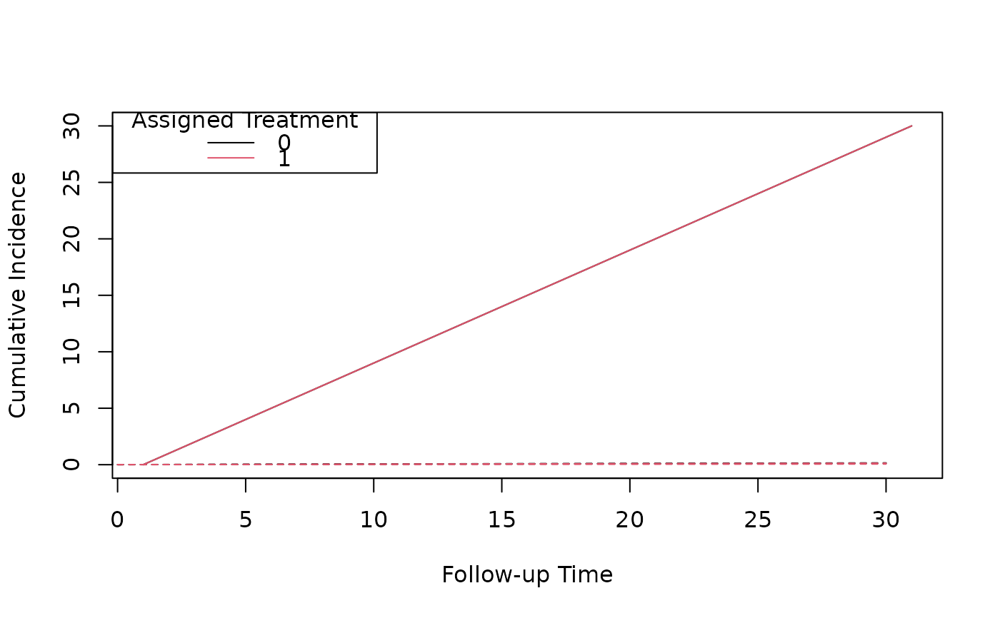

predict.RTE_model.RdPredict Cumulative Incidence with Confidence Intervals
Object from data_modelling() or initiators().
Baseline trial data to predict cumulative incidence or survival for. If newdata contains
rows with followup_time > 0 these will be removed.
Follow-up times to predict. Any times given in newdata will be ignored.
Calculate a confidence interval using coefficient samples from a multivariate normal distribution based on the robust covariance matrix.
The number of samples of the coefficients for prediction models.
Type of values to calculate. Either cumulative incidence ("cum_inc") or survival ("survival").
Further arguments passed to or from other methods.
A list of three data frames containing the cumulative incidences for each of the assigned treatment options and the difference between them.
model <- initiators(
data = trial_example,
outcome_cov = c("catvarA", "catvarB", "catvarC", "nvarA", "nvarB", "nvarC"),
)
#> Starting data manipulation
#> Finished data manipulation
#> Processing time of data manipulation: 0.5 s
#> ------------------------------------------------------------
#> Starting data extension
#> Finish data extension
#> Processing time of data extension: 4.2 s
#> ------------------------------------------------------------
#> Summary of extended data:
#> Number of observations: 1939053
#> ------------------------------------------------------------
#> Preparing for model fitting
#> ------------------------------------------------------------
#> Fitting outcome model
#> Processing time of fitting outcome model: 11.399 s
#> summary(model)
#>
#> Call:
#> stats::glm(formula = model_formula, family = binomial(link = "logit"),
#> data = data, weights = data[["weight"]])
#>
#> Deviance Residuals:
#> Min 1Q Median 3Q Max
#> -0.4234 -0.1059 -0.0882 -0.0685 3.8232
#>
#> Coefficients:
#> Estimate Std. Error z value Pr(>|z|)
#> (Intercept) -3.457e+00 1.006e-01 -34.346 < 2e-16 ***
#> assigned_treatment -2.816e-01 4.619e-02 -6.097 1.08e-09 ***
#> for_period 1.561e-03 6.203e-04 2.516 0.01186 *
#> I(for_period^2) 9.380e-07 1.493e-06 0.628 0.52986
#> followup_time 2.864e-03 5.197e-04 5.511 3.56e-08 ***
#> I(followup_time^2) -6.890e-06 2.262e-06 -3.046 0.00232 **
#> catvarA 5.858e-02 5.465e-03 10.719 < 2e-16 ***
#> catvarB -5.445e-02 6.107e-03 -8.915 < 2e-16 ***
#> catvarC -2.074e-02 5.036e-03 -4.119 3.81e-05 ***
#> nvarA -7.957e-02 7.738e-03 -10.284 < 2e-16 ***
#> nvarB 4.801e-03 3.173e-04 15.132 < 2e-16 ***
#> nvarC -4.054e-02 8.277e-04 -48.982 < 2e-16 ***
#> ---
#> Signif. codes: 0 ‘***’ 0.001 ‘**’ 0.01 ‘*’ 0.05 ‘.’ 0.1 ‘ ’ 1
#>
#> (Dispersion parameter for binomial family taken to be 1)
#>
#> Null deviance: 111015 on 1939052 degrees of freedom
#> Residual deviance: 107847 on 1939041 degrees of freedom
#> AIC: 107871
#>
#> Number of Fisher Scoring iterations: 8
#>
#> ------------------------------------------------------------
#> Calculating robust variance
#> Processing time of calculating robust variance: 1.4 s
#> Summary with robust standard error:
#> names estimate robust_se lb ub z p_value
#> 1 (Intercept) -3.46e+00 6.57e-01 -4.74e+00 -2.17e+00 -5.263 <1e-04
#> 2 assigned_treatment -2.82e-01 3.13e-01 -8.94e-01 3.31e-01 -0.901 0.3676
#> 3 for_period 1.56e-03 4.03e-03 -6.33e-03 9.45e-03 0.388 0.6983
#> 4 I(for_period^2) 9.38e-07 9.38e-06 -1.75e-05 1.93e-05 0.100 0.9204
#> 5 followup_time 2.86e-03 3.39e-03 -3.79e-03 9.52e-03 0.844 0.3987
#> 6 I(followup_time^2) -6.89e-06 1.62e-05 -3.86e-05 2.49e-05 -0.425 0.6706
#> 7 catvarA 5.86e-02 3.14e-02 -2.97e-03 1.20e-01 1.865 0.0621
#> 8 catvarB -5.44e-02 2.97e-02 -1.13e-01 3.72e-03 -1.835 0.0666
#> 9 catvarC -2.07e-02 2.61e-02 -7.19e-02 3.05e-02 -0.794 0.4272
#> 10 nvarA -7.96e-02 4.49e-02 -1.68e-01 8.44e-03 -1.772 0.0764
#> 11 nvarB 4.80e-03 2.33e-03 2.25e-04 9.38e-03 2.056 0.0397
#> 12 nvarC -4.05e-02 6.76e-03 -5.38e-02 -2.73e-02 -5.996 <1e-04
#> ------------------------------------------------------------
predicted_ci <- predict(model, predict_times = 0:30, samples = 20)
# Plot the cumulative incidence curves for each treatment
plot(predicted_ci[[1]]$followup_time, predicted_ci[[1]]$estimate,
type = "l",
xlab = "Follow-up Time", ylab = "Cumulative Incidence"
)
lines(predicted_ci[[1]]$followup_time, predicted_ci[[1]]$`2.5%`, lty = 2)
lines(predicted_ci[[1]]$followup_time, predicted_ci[[1]]$`97.5%`, lty = 2)
lines(predicted_ci[[2]]$followup_time, predicted_ci[[2]]$estimate, type = "l", col = 2)
lines(predicted_ci[[2]]$followup_time, predicted_ci[[2]]$`2.5%`, lty = 2, col = 2)
lines(predicted_ci[[2]]$followup_time, predicted_ci[[2]]$`97.5%`, lty = 2, col = 2)
legend("topleft", title = "Assigned Treatment", legend = c("0", "1"), col = 1:2, lty = 1)

# Plot the difference in cumulative incidence over follow up
plot(predicted_ci[[3]]$followup_time, predicted_ci[[3]]$estimate,
type = "l",
xlab = "Follow-up Time", ylab = "Difference in Cumulative Incidence",
ylim = c(-0.1, 0.1)
)
lines(predicted_ci[[3]]$followup_time, predicted_ci[[3]]$`2.5%`, lty = 2)
lines(predicted_ci[[3]]$followup_time, predicted_ci[[3]]$`97.5%`, lty = 2)